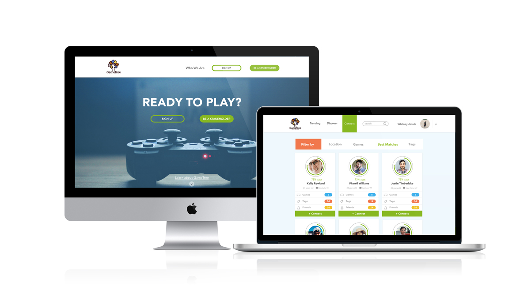
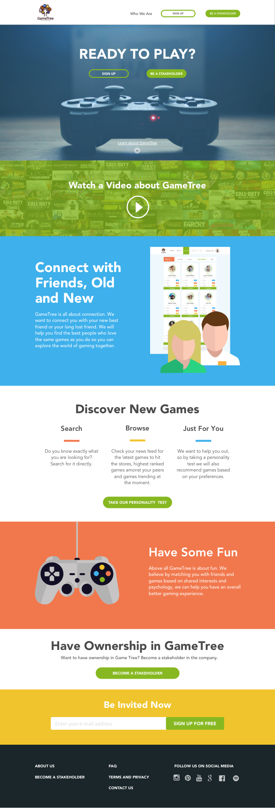
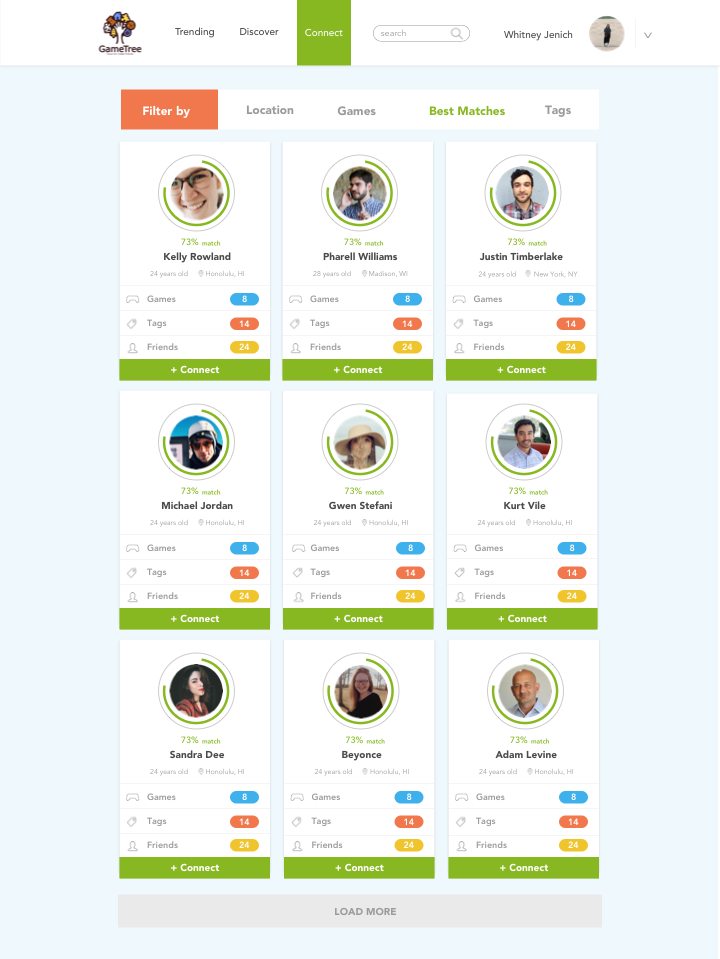

Game Tree
Web, UX, UI, Branding
Overview
My mentor John, from my Frontend Development course with Bloc, is starting a new site for gamers. He asked some of his graduated students to mock up two pages for the site; a landing page to introduce potential users and donors to Game Tree and a view of what searching for friends may look like. After a formal critique and discussion, my friend search page won that part of the competition, and they will be implementing the visual aesthetics of it into the site.

Research
To set myself for success with this competition, I thuroughly read and educated myself on all the information given to me. Included was their mission statement, what they intended to do and who they were aiming the web application towards. I then took that information and made my own set of user stories pertainting to what I deemed the landing and friend search pages needed to do for the user.
Landing Page User Stories & Objectives
The objective of the landing page was a simple one, to grab the attention of a potential gamer or donor, make them understand what Game Tree was and be invited to a) join the Game Tree community and/or b) Donate to the application.
- As a user, I want to view a video about Game Tree
- As a user, I want to understand what exactly I can do on Game Tree
- As a user, I want to be invited by email to join the community
- As a user, I want to donate to the cause
Friend Search User Stories & Objectives
The objectives of the "Find Friends" page was to be able to find old friends, find new frineds, Discover Games and find friends based on similar friends and tastes in games.
- As a user, I want to receive friend reccomendations
- As a user, I want to find friends directly through a search tool
- As a user, I want to filter friends by city, age, sex and distance
- As a user, I want to view a profile of a potential new friend
- As a user, I want to view how many interests and tastes we have in common
- As a user, I want to "friend" someone in one click
The Design
I was given a logo to launch my ideation of the landing and friend page off of. It was the logo that took my design in a flat and playful direction with the splash page. My color pallete was taken from the X, Y, Z, O buttons found on a game controller and I chose a simple sans serif font to make the site feel safe, friendly and exciting. For the friend search page, I wanted to use "cards" as an easy way to organize information of different users while also nodding to the playfulness of different types games.

